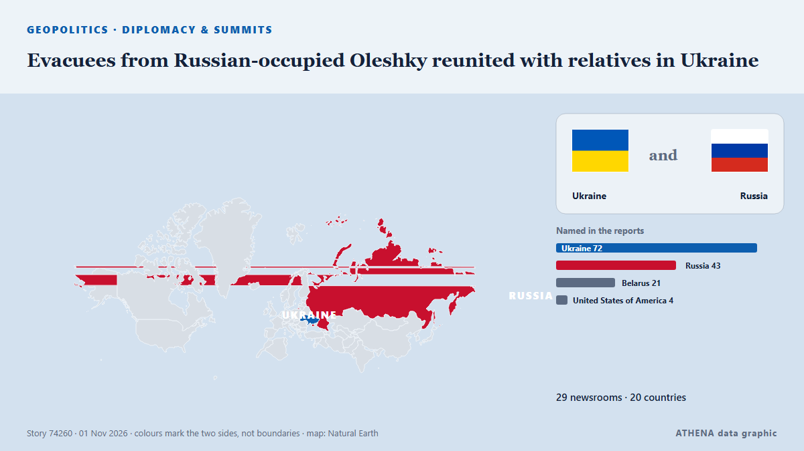

Evacuees from Russian-occupied Oleshky reunited with relatives in Ukraine

Russia and Ukraine have not specified how many people chose to leave the city. von The Irish News (Belfast)
Unabhängig gemeldet von 29 Medien in 20 Ländern seit dem 30. Okt., zuerst von CGTN (World); die Berichterstattung flaut ab. ATHENA stuft das Risiko als mäßig ein (3.1/10), vor allem wegen der Schwere des beschriebenen Schadens und seiner geografischen und sektoralen Reichweite. Die Konfidenz liegt bei 89 % (hoch): 29 Medien bestätigen es unabhängig, bei einer mittleren Verlässlichkeit der Quellen von 76 %. Medien nach Land: Vereinigtes Königreich (7), Ukraine (4), Belarus (3). Berichterstattung: 30. Okt. bis 1. Nov., 34 Stunden.
Warum es wichtig ist: Russlands Großangriff auf die Ukraine begann im Februar 2022. Dieser Tracker verfolgt die Kämpfe, Angriffe auf Infrastruktur und die Diplomatie rund um den Krieg, wie Redaktionen weltweit darüber berichten.
Was sich geändert hat: 34 neue Berichte von 28 Redaktionen in den 24 Stunden bis 1. Nov..
Erste Schlagzeile: 08:58 Belarus Red Cross chief: We are ready to offer warmth, comfort to everyone in need Society
Schlagzeilen werden auf Englisch angezeigt, wie veröffentlicht.
Auf einen Blick
Ausgewählt, bewertet und geschrieben nach der veröffentlichten Methodik von ATHENA. Kein Redakteur greift in einzelne Ereignisse ein. So entsteht ATHENA ›
| 30 Oct 20:53 UTC | 1 |
|---|---|
| 30 Oct 22:53 UTC | 0 |
| 31 Oct 00:53 UTC | 0 |
| 31 Oct 02:53 UTC | 0 |
| 31 Oct 04:53 UTC | 1 |
| 31 Oct 06:53 UTC | 2 |
| 31 Oct 08:53 UTC | 0 |
| 31 Oct 10:53 UTC | 6 |
| 31 Oct 12:53 UTC | 9 |
| 31 Oct 14:53 UTC | 5 |
| 31 Oct 16:53 UTC | 8 |
| 31 Oct 18:53 UTC | 1 |
| 31 Oct 20:53 UTC | 2 |
| 31 Oct 22:53 UTC | 0 |
| 01 Nov 00:53 UTC | 0 |
| 01 Nov 02:53 UTC | 0 |
| 01 Nov 04:53 UTC | 0 |
| 01 Nov 06:53 UTC | 1 |
| 31 Oct 06:44 UTC | 0.0 |
|---|---|
| 31 Oct 13:25 UTC | 1.6 |
| 31 Oct 13:37 UTC | 2.8 |
| 31 Oct 13:42 UTC | 3.4 |
| 31 Oct 14:54 UTC | 2.6 |
| 31 Oct 15:01 UTC | 3.3 |
| 01 Nov 07:14 UTC | 3.1 |
Warum diese Zahlen
Bedeutung
Risiko
Konfidenz
Die Berichterstattung – wer berichtete, und wann
Schlagzeile wie veröffentlicht · öffnet das Original- CGTN (World) · ChinaPutin, Kremlin, praise US First Lady over Oleshky truce
- BelTA (English) — page reader · Belarus08:58 Belarus Red Cross chief: We are ready to offer warmth, comfort to everyone in need Society
- BelTA (English) — page reader · Belarus11:08 ‘No drones and shells here’: Oleshky evacuee shares relief after reaching Belarus Society
- BelTA (English) — page reader · Belarus10:36 Three planes carrying Oleshky evacuees land in Belarus Society
- Al Jazeera English · KatarEvacuees from Russian-occupied Oleshky arrive in Ukraine via Belarus
- The Moscow Times · RusslandOleshky Evacuees Arrive in Ukraine
- The Irish News (Belfast) · Vereinigtes KönigreichEvacuees from occupied Oleshky arrive in Belarus en route to Ukraine
- Belfast Telegraph · Vereinigtes KönigreichEvacuees from occupied Oleshky arrive in Belarus en route to Ukraine
- Türkiye Today · TürkeiOleshky evacuees reach Belarus under Melania Trump-brokered ceasefire
- CBC News (alternative feed) · KanadaCivilians evacuated from Russian-occupied Oleshky arrive in Ukraine-held territory
- Ukrainska Pravda (English) · UkraineEvacuees from Oleshky have arrived in Ukraine, says Zelenskyy – photo, video
- Kyiv Independent · Ukraine'It's a miracle' — Oleshky residents reach Ukrainian-controlled territory after escaping Russian occupation
- Bangkok Post — page reader · ThailandEvacuees from Russian-occupied city due in Ukraine
- Egypt Independent · ÄgyptenOleshky evacuees return to Ukraine under Melania Trump-brokered ceasefire
- Kyiv Post · UkraineOleshky Evacuees, Aid Delegation Cross Border Into Ukraine
- TheJournal.ie · IrlandEvacuees from Russian-occupied Oleshky arrive in Ukraine under Trump-brokered deal
- Anadolu Agency (English) · TürkeiZelenskyy says evacuees from Oleshky crossed into Ukraine's Chernihiv region
- Ukrinform (English) · UkraineOldest evacuee from Oleshky is 94, Lubinets says
- ABC News Australia · AustralienEvacuees from Russian-occupied Oleshky reach Ukraine amid ceasefire
- Belfast Telegraph · Vereinigtes KönigreichEvacuees from Russian-occupied Oleshky reunited with relatives in Ukraine
- The Irish News (Belfast) · Vereinigtes KönigreichEvacuees from Russian-occupied Oleshky reunited with relatives in Ukraine
- DW English · DeutschlandUkraine news: Evacuees from Russian-occupied Oleshky reach Kyiv-controlled territory
- The Jerusalem Post · IsraelUkrainian evacuees reach Belarus as Melania Trump-brokered Oleshky ceasefire takes effect
- Times of India · IndienOleshky evacuees reach Ukraine after taking a detour through Russia
- BBC News · Vereinigtes KönigreichEmotional reunions with loved ones for Oleshky evacuees
- ABC News (International) · Vereinigte StaatenEvacuees reunite with family at the Ukrainian-Belarusian border after fleeing Oleshky
- The Hill · Vereinigte StaatenEvacuees from Russia-controlled Oleshky arrive back in Ukraine amid U.S.-brokered ceasefire
- The Straits Times · SingapurForced to eat grass, Oleshky evacuees say Russia-Ukraine truce was a ‘blessing’
- The Independent · Vereinigtes Königreich‘We escaped from hell’: Hundreds of starving Ukrainians return home from Russian-occupied Oleshky under ceasefire deal
- Bangkok Post — page reader · ThailandForced to eat grass, Oleshky evacuees say truce was a 'blessing'
- People Daily · KeniaUkrainian evacuees reunite with family after years of being trapped in Russia-occupied city
- Al Jazeera English · KatarEvacuees of Russian-occupied Oleshky reunited with families
- The Guardian · Vereinigtes KönigreichOleshky evacuees reunite with families after truce allows crossing back into Ukraine
- Arab News · Saudi-ArabienEvacuees reunite with family at the Ukrainian-Belarusian border after fleeing Oleshky
- New Straits Times · MalaysiaForced to eat grass, Oleshky evacuees say truce was a 'blessing'